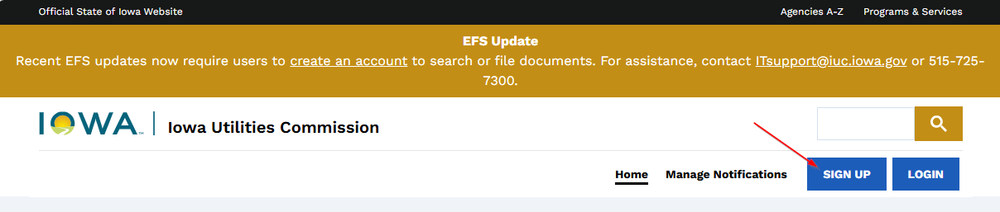
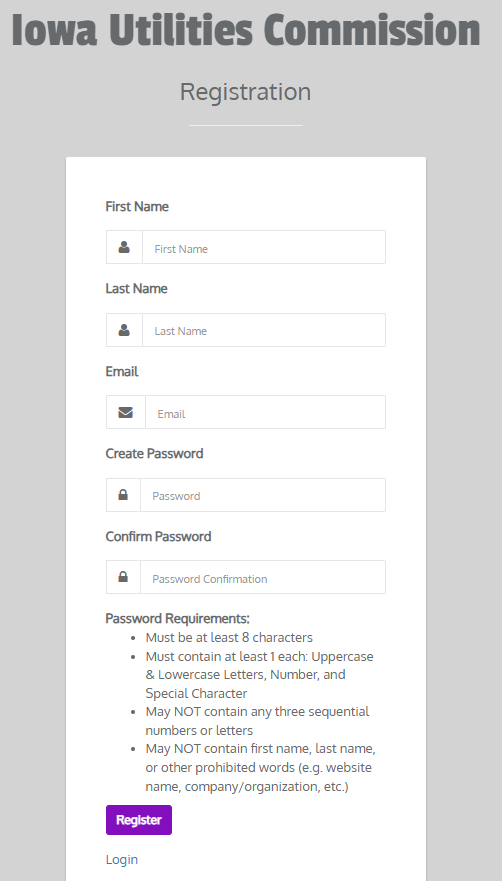
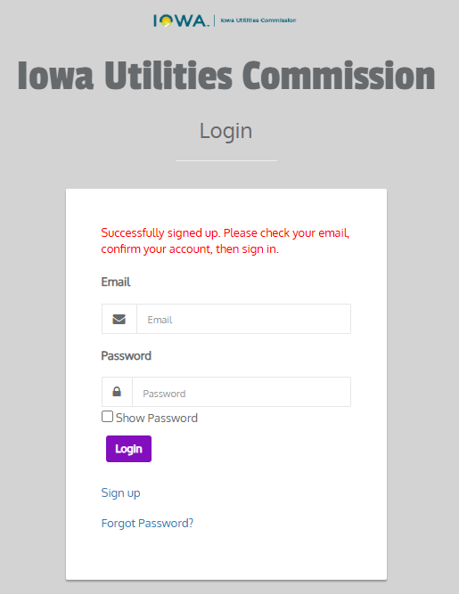
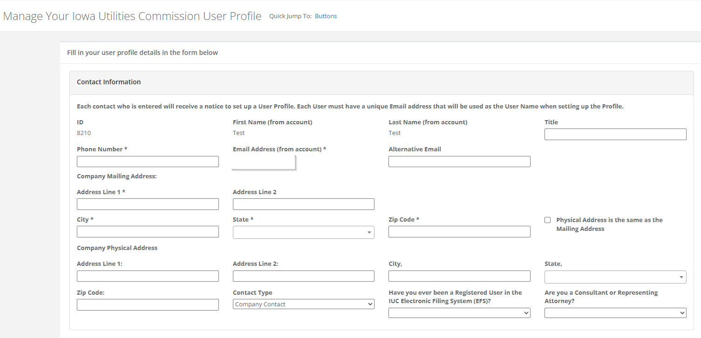
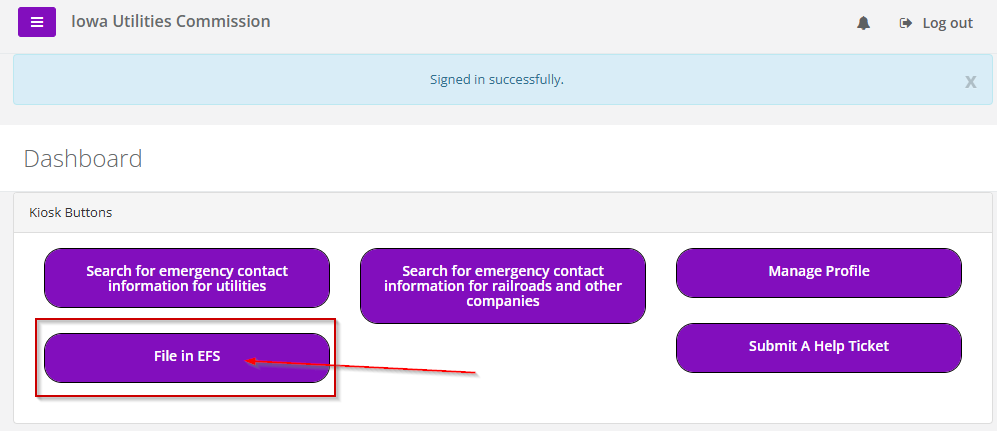
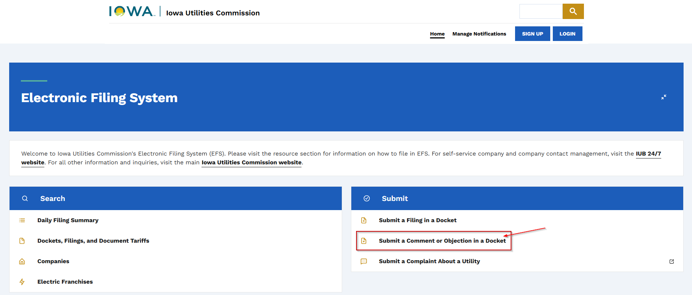
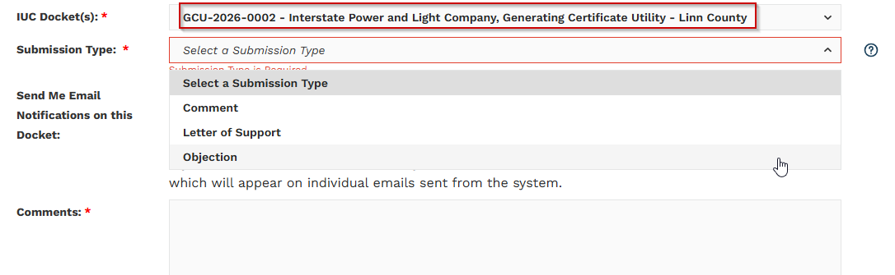

Make Your Voice Count
Submitting questions or comments through the Iowa Utilities Board's EFS ensures your concerns about the plant are part of the official record. Your input helps regulators understand community priorities, protects local interests, and increases transparency in the decision-making process. Silence could be interpreted as agreement—make sure your voice is heard.
To submit via the Iowa Utilities Board's website:
- Visit efs.iowa.gov and click Sign Up to complete your registration.
- Log in to the EFS system and select File in EFS.
- Choose Submit a Comment or Objection in a Docket.
- Enter Docket Number: GCU-2026-0002
- Select your submission type
- Explain why this plant is the wrong project and wrong location for our communities
Official comments become part of the project record.
Instructions with example submissions can be found at savemorganvalley.com or scan the QR code on our flyer.
Need Help?
We can help you submit your comment! Contact us:
Email: savemorganvalley@gmail.com
Text: 319-538-7601
Or come to one of our Meet in the Park events and we'll help you file in person!
How to Create an Account on the EFS System
-
Open IUC Electronic Filing System website (efs.iowa.gov)

-
Click Sign Up

-
Fill out Registration form

-
You will receive an email in which you will need to click on the link to "Confirm your Email Address". You may be required to log back in with your email and password.

-
You will be prompted to complete your user profile

- Once registration is complete, or when you log back into the EFS system, you will need to click on "File in EFS"
-
On the next page click on "Submit a Comment or Objection in a Docket"

-
This will take you to the page where you can submit your comments. You will need to select Docket No. GCU-2026-0002 prior to submitting.

- Finally, add your comments.
Note: For your convenience, we have provided a Template Letter (below) of opposition referencing the facts around the negative effects of having a plant like this.
Template Letter of Opposition
Use this template to submit your comment to the Iowa Utilities Commission. Fill in the blanks with your personal information.
As a resident of _______ (City), Iowa in ________County, I am asking for my complaint to be filed on Docket Number: GCU-2026-0002
Name: _________________
Address: _________________
Email Address: _________________
Phone Number: _________________
The current site for the Morgan Valley Energy Center proposed by Interstate Power and Light Company (a subsidiary of Alliant Energy) will be less than 3 miles northwest of the city; thus, it will negatively impact me personally. According to Chapter 24 of the Iowa Administrative Code, this will place my residences within the ten-mile radius of the "site impact area".
A review of historical weather data for Fairfax, Iowa shows that prevailing winds most frequently come from westerly quadrants—primarily W, WSW, and NW—across multiple years, based on annual wind direction observations. Given this data, the residents of ________ will be disproportionately affected by the emissions from the proposed power plant. The prevailing winds coupled with the greenhouse gases and millions of tons of harmful emissions it will produce will create adverse health effects for myself and the other residents of ________.
There are several documented adverse health effects from Combustion Turbine Power Plants like the one proposed by Alliant Energy. Some of the impacts on the public include:
- Low birth weight
- Miscarriages
- Premature deaths
- Increased cases of asthma
- Increased heart attacks
- Increased emergency room visits
- Increased cancer rates
Our neighboring state of Wisconsin has estimated that similar power plants will result in increased healthcare costs of over $3.5 billion. As expected, these health effects further compound healthcare costs and place strain on an already over-burdened healthcare system which is currently facing record high staffing shortages locally.
Additionally, it should be noted that Alliant Energy has not fulfilled the requirements outlined by Chapter 476A.6, #3. An Alliant representative stated at the Fairfax City Council meeting on March 24, 2026 that they have not "evaluated other energy options at that site" as seen on the recording at approximately 24 minutes into the recording.
Provided, the lack of compliance with Iowa Chapter 476b, the adverse health effects outlined, and the lack of positive impact on utility costs for the residents of Fairfax, I strongly urge the Office of Consumer Advocate and the Iowa Utilities Commission to deny the application for the Morgan Valley Energy Center until:
- A location is found that will impact those individuals who will directly benefit from the reduction in their utility bills, or
- Alternative options with less negative health impacts can be found.
References:
- City of Fairfax, Iowa, City Council Meeting 2, March 24, 2026, https://youtu.be/ljp7y8xzRao?si=TM_x5PXspS2Hns-2
- Chapter 24, Iowa Administrative Code, April 30, 2025, https://www.legis.iowa.gov/docs/iac/chapter/199.24.pdf
- Environmental Defense Fund, 2026, Clearing the Air: The Need and Opportunity to Reduce Unhealthy Pollution From Gas-Fired Power Plants and Industrial Facilities, https://turbinemap.edf.org/
- Healthy Climate Wisconsin, updated Jan 27, 2025, New Analysis Details the Public Health Impacts of Proposed Gas Plants in Wisconsin
- United States Environmental Protection Agency, January 2026, Economic Impact Analysis for the New Source Performance Standards Review for Stationary Combustion Turbines: Final Rule
- Weather Ferret, 2022, Weather Reports for The City of Fairfax in Iowa
- World Weather Online, 2025, 52228, Fairfax, Historical Weather